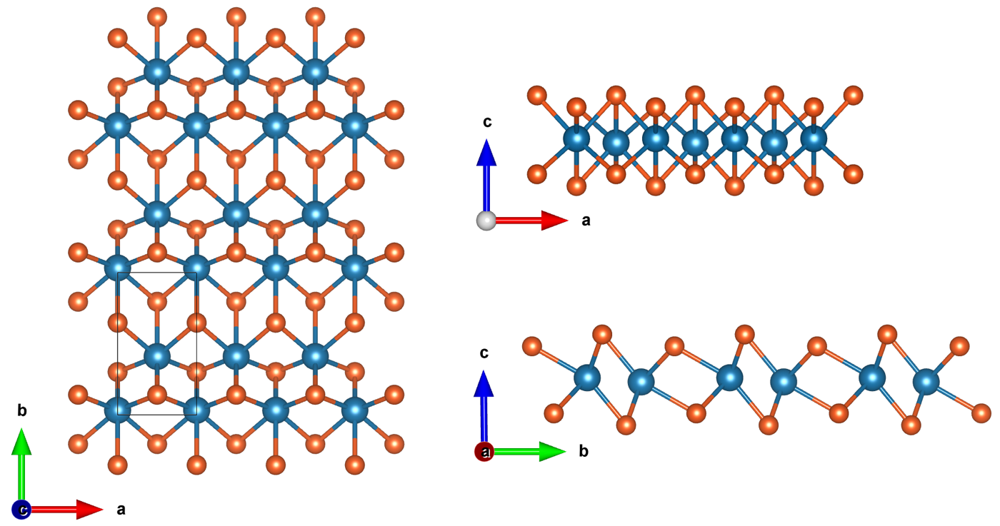
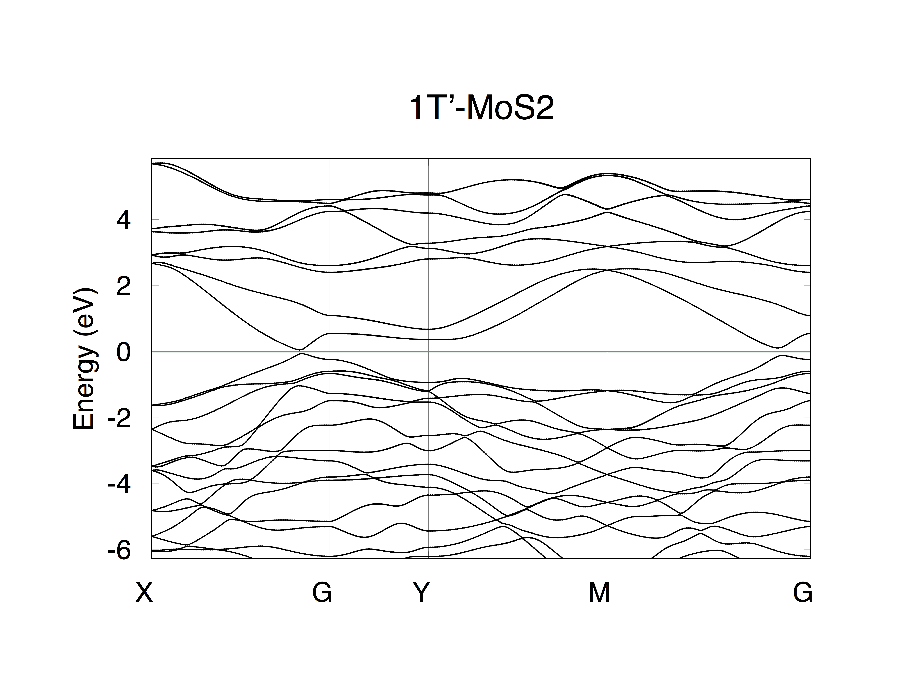
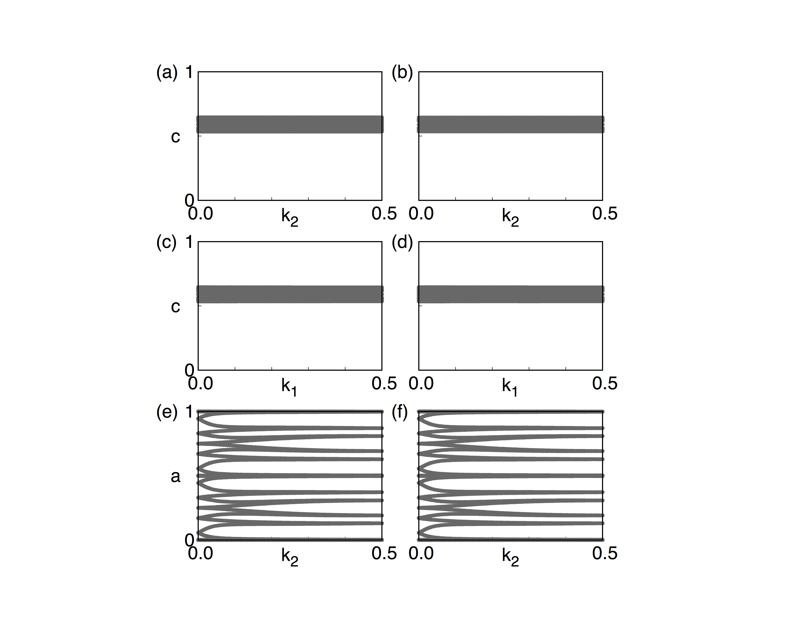
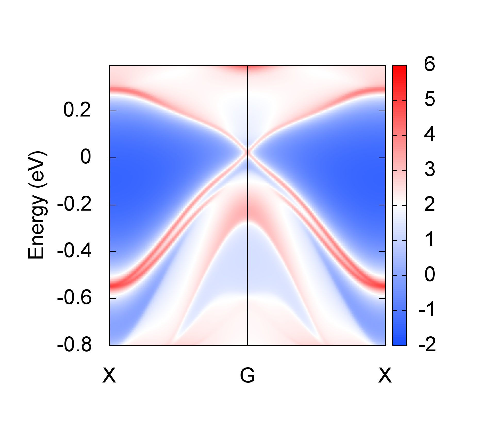

3.2. MoS2 (2D QSHE)#
WannierTools also works fine with 2D materials. The way we handle it is just like what we simulated in the first principle calculations. A 2D material is just a layer structured 3D material with zero coupling along z direction. The settings of WannierTools for 2D materials are the same of 3D materials. However, you should only care about the properties happen in the kz=0 plane, since the properties are the same for different kz.
Monolayer square transition metal dichalcogenides (MoS2, MoSe2, MoTe2, WS2, WSe2, and WTe2) was predicted to be robust topological insulators (TIs) with Z2=1. As a good 2D TI, 1T’-MoS2 is taken as an example to test WannitrTolls.
Here is the primitive unit cell of 1T’-MoS2
{kind=link}
3.2.1. Band structure#
Firstly, you need to study the electronic structure of MoS2 with first-principle software package, like VASP, Wien2k, Abinit, Quantum-espresso et al. In this tutorial, we select VASP. Here is the calculated band structure. Then Wannier90 is applied to construct MLWF tight binding (TB) model (see more details from http://www.wannier.org). Here we only tell you that the s, d orbitals of Mo and s, p orbitals of S are selected as the initial projectors for Wannier90. The band structure calculated from the MLWF-TB model is as follows
{kind=link}
This band structure can be calculated directly from Wannier90. Also can be calculated from WannierTools. The settings in WT.in are
&CONTROL
BulkBand_calc = T
/
&SYSTEM
SOC = 1 ! soc
E_FERMI = -3.9151 ! e-fermi
/
&PARAMETERS
Nk1 = 101 ! number k points odd number would be better
/
KPATH_BULK ! k point path
4 ! number of k line only for bulk band
X 0.50000 0.00000 0.00000 G 0.00000 0.00000 0.00000
G 0.00000 0.00000 0.00000 Y 0.00000 0.50000 0.00000
Y 0.00000 0.50000 0.00000 M 0.50000 0.50000 0.00000
M 0.50000 0.50000 0.00000 G 0.00000 0.00000 0.00000
3.2.2. Z2 topological number#
From the band structure above, it is clear that it is a insulator. This is also can be checked by calculating the density of state (DOS). In order to identify the topological properties, we have to calculate the Z2 topological number, which is valid for time-reversal invariant system with a continuous full gap in the Brilloin Zone. The Z2 topological number for 3D bulk system can be obtained from the calculation of the Wilson loop (Wannier charge center) for the six time-reversal invariant momentum plane. (a) k1=0.0, (b) k1=0.5; (c) k2=0.0; (d) k2=0.5; (e) k3=0.0, (f) k3=0.5. It can be done using WannierTools with setting in WT.in
&CONTROL
Z2_3D_calc = T
/
&SYSTEM
SOC = 1 ! soc
NumOccupied = 36 ! Number of occupied Wannier bands
/
&PARAMETERS
Nk1 = 101 ! number k points odd number would be better
Nk2 = 41 ! number k points odd number would be better
/
The resutls are
{kind=link}
(a) k1=0.0, z2=0; (b) k1=0.5, z2=0; (c) k2=0.0, z2=0; (d) k2=0.5, z2=0; (e) k3=0.0, z2=1; (f) k3=0.5, z2=1;
So the bulk Z2 topological number is (0, 001), which means a weak topological insulator in 3-dimension picture, while a strong TI in 2D picture. For a 2D material, you only need the topological index in figure (e).
3.2.3. Edge state#
The edge states of a 2D material is the side surface of a 3D model. The calculated edge states of MoS2 on (100) surface is
{kind=link}
The settings in WT.in are
&CONTROL
SlabSS_calc = T
/
&SYSTEM
SOC = 1 ! soc
NumOccupied = 36 ! Number of occupied Wannier bands
E_FERMI = -3.9151 ! e-fermi
/
&PARAMETERS
Eta_Arc = 0.001 ! infinite small value, like brodening
E_arc =-0.05 ! energy for calculate Fermi Arc
OmegaMin = -0.8 ! energy interval
OmegaMax = 0.4 ! energy interval
OmegaNum = 401 ! omega number
Nk1 = 101 ! number k points odd number would be better
Nk2 = 101 ! number k points odd number would be better
Np = 2 ! number k points odd number would be better
/
MILLER_INDICES
1 0 0
!SURFACE ! See doc for details
0 1 0
0 0 1
1 0 0
KPATH_SLAB
2 ! numker of k line for 2D case
X 0.5 0.0 G 0.0 0.0 ! k path for 2D case
G 0.0 0.0 X 0.5 0.0
KPLANE_SLAB
-0.5 -0.5 ! Original point for 2D k plane
1.0 0.0 ! The first vector to define 2D k plane
0.0 1.0 ! The second vector to define 2D k plane for arc plots
3.2.4. Full settings in WT.in of 1Tp-MoS2#
&TB_FILE
Hrfile = 'wannier90_hr.dat'
Package = 'VASP'
/
!> bulk band structure calculation flag
&CONTROL
BulkBand_calc = T
BulkFS_calc = F
Z2_3D_calc = T
DOS_calc = F
BulkFS_plane_calc = F
BulkGap_cube_calc = F
BulkGap_plane_calc = F
SlabBand_calc = F
WireBand_calc = F
SlabSS_calc = T
SlabArc_calc = T
SlabSpintexture_calc = F
wanniercenter_calc = F
BerryPhase_calc = F
BerryCurvature_calc = F
/
&SYSTEM
NSLAB = 20
NumOccupied = 36 ! NumOccupied
SOC = 1 ! soc
E_FERMI = -3.9151 ! e-fermi
surf_onsite= 0.0 ! surf_onsite
/
&PARAMETERS
Eta_Arc = 0.001 ! infinite small value, like brodening
E_arc = -0.05 ! energy for calculate Fermi Arc
OmegaNum = 401 ! omega number
OmegaMin = -0.8 ! energy interval
OmegaMax = 0.4 ! energy interval
Nk1 = 101 ! number k points
Nk2 = 101 ! number k points
Nk3 = 3 ! number k points
NP = 2 ! number of principle layers
Gap_threshold = 0.10 ! threshold for GapCube output
/
LATTICE
Angstrom
3.1770280139589571 0.0000000000000000 0.0000000000000000
0.0000000000000000 5.7281689431742455 -0.0157118470068534
0.0000000000000000 0.3756910330601151 30.2151819975086902
ATOM_POSITIONS
6 ! number of atoms for projectors
Direct ! Direct or Cartisen coordinate
Mo 0.5000000049999969 0.4188543132266640 0.5873016275251595
Mo -0.0000000000000000 0.0233088607917941 0.5925355564141651
S 0.5000000049999969 0.1358785901303858 0.6473858970202739
S 0.0000000000000000 0.6405161490437790 0.6337728762151337
S -0.0000000000000000 0.3062864083475208 0.5324524179435783
S 0.5000000049999969 0.8016452854598629 0.5460646648816858
PROJECTORS
6 6 4 4 4 4 ! number of projectors
Mo s dxy dyz dxz dx2-y2 dz2 ! projectors
Mo s dxy dyz dxz dx2-y2 dz2 ! projectors
S s px py pz
S s px py pz
S s px py pz
S s px py pz
MILLER_INDEX ! this is equal to the SURFACE card
1 0 0
!SURFACE ! MoS2 conventional (010) surface
0 1 0
0 0 1
1 0 0
KPATH_BULK ! k point path
4 ! number of k line only for bulk band
X 0.50000 0.00000 0.00000 G 0.00000 0.00000 0.00000
G 0.00000 0.00000 0.00000 Y 0.00000 0.50000 0.00000
Y 0.00000 0.50000 0.00000 M 0.50000 0.50000 0.00000
M 0.50000 0.50000 0.00000 G 0.00000 0.00000 0.00000
KPATH_SLAB
2 ! numker of k line for 2D case
X 0.5 0.0 G 0.0 0.0 ! k path for 2D case
G 0.0 0.0 X 0.5 0.0
KPLANE_SLAB
-0.5 -0.5 ! Original point for 2D k plane
1.0 0.0 ! The first vector to define 2D k plane
0.0 1.0 ! The second vector to define 2D k plane for arc plots
KPLANE_BULK
-0.50 -0.50 0.00 ! Original point for 3D k plane
1.00 0.00 0.00 ! The first vector to define 3d k space plane
0.00 1.00 0.00 ! The second vector to define 3d k space plane
KCUBE_BULK
-0.50 -0.50 -0.50 ! Original point for 3D k plane
1.00 0.00 0.00 ! The first vector to define 3d k space plane
0.00 1.00 0.00 ! The second vector to define 3d k space plane
0.00 0.00 1.00 ! The third vector to define 3d k cube
WANNIER_CENTRES
Cartesian
1.582112 2.389848 17.807782
1.588504 2.609305 17.734627
1.588512 2.615066 17.729182
1.588518 2.627199 17.745843
1.588498 2.598550 17.729411
1.588498 2.629729 17.732881
-0.004616 0.781697 17.681791
-0.000012 0.362382 17.901360
0.000001 0.357923 17.918636
-0.000009 0.350028 17.898957
-0.000005 0.365927 17.908526
-0.000007 0.366124 17.901329
1.588504 1.034466 19.413821
1.588523 1.032565 19.619308
1.588472 1.012794 19.497202
1.588484 1.034341 19.536688
-0.000085 3.898045 19.004023
-0.000043 3.932819 19.131844
-0.000018 3.905334 19.041137
0.000028 3.922253 19.122079
-0.000005 1.945318 16.239885
-0.000014 1.949702 16.018513
-0.000042 1.987244 16.143671
-0.000004 1.954899 16.130450
1.588449 4.785448 16.618078
1.588486 4.728185 16.486681
1.588469 4.865486 16.580409
1.588453 4.810723 16.489254
1.595220 2.389977 17.807534
1.588525 2.609305 17.734627
1.588517 2.615065 17.729183
1.588510 2.627201 17.745844
1.588530 2.598543 17.729408
1.588531 2.629735 17.732878
0.004808 0.781415 17.681511
0.000013 0.362387 17.901363
-0.000001 0.357918 17.918638
0.000009 0.350028 17.898959
0.000005 0.365927 17.908525
0.000007 0.366134 17.901324
1.588524 1.034460 19.413819
1.588506 1.032552 19.619299
1.588559 1.012789 19.497215
1.588545 1.034346 19.536661
0.000087 3.898051 19.004022
0.000044 3.932824 19.131846
0.000018 3.905353 19.041145
-0.000027 3.922253 19.122048
0.000005 1.945317 16.239895
0.000014 1.949708 16.018506
0.000043 1.987240 16.143659
0.000006 1.954899 16.130433
1.588582 4.785446 16.618079
1.588543 4.728170 16.486695
1.588562 4.865497 16.580411
1.588575 4.810739 16.489208